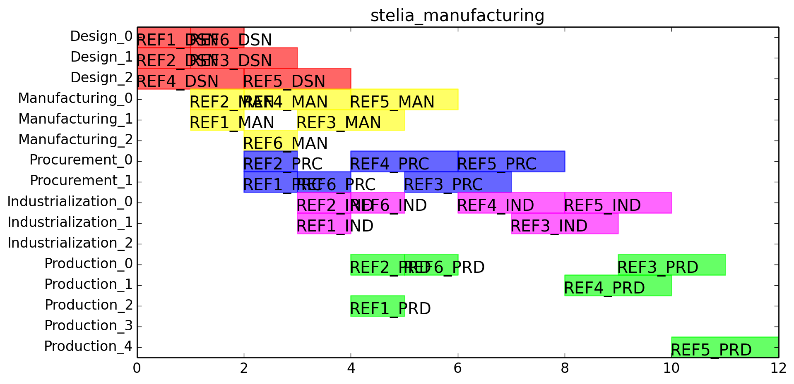

<link rel="import" href="../../bower_components/polymer/polymer.html">

<!--
import is done in ge-app since it is needed by both views
<link rel="import" href="../../bower_components/px-card/px-card.html">
-->
<dom-module id="view-3">
    <template>
        <h1>Schedule</h1>
        <px-card icon="demo-icon" >             
	    
        </px-card>
    </template>
    <script>

        "use strict";

        Polymer({
            is: "view-3",
            properties: {},
            ready: function () {
                console.log("view3 ready()");
            }
        });
    </script>
</dom-module>
